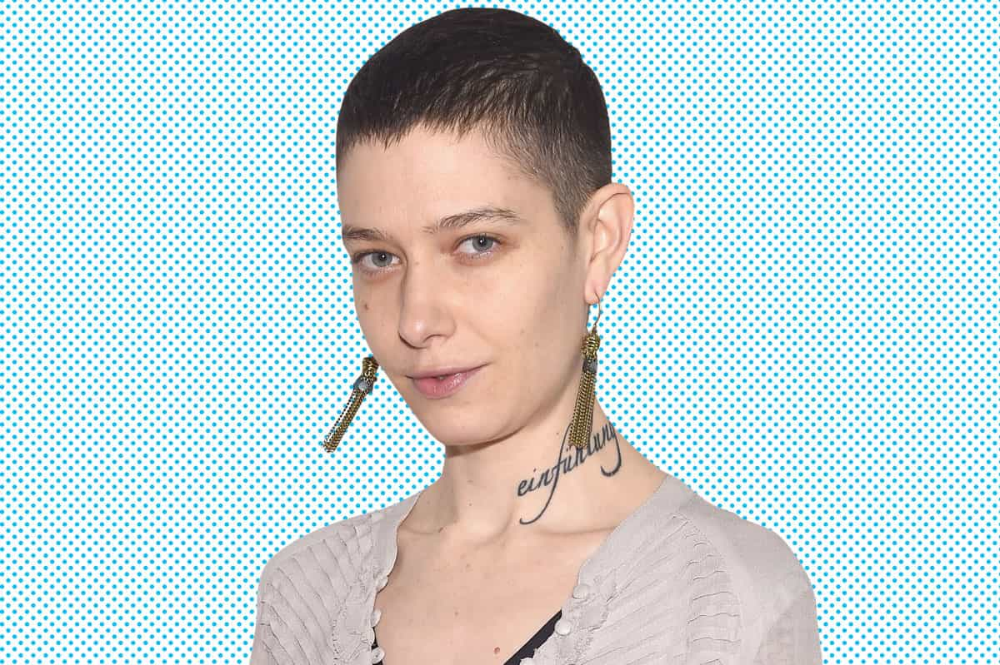

< < < Back
MTV Doubles Down On Degeneracy By Granting “Gender Neutral” Award To Emma Watson – Return Of Kings
I’m so proud to be part of a film that celebrates diversity, literacy, inclusion, joy and love the way this one does.
— Emma Watson praising the film
Seeking to make the most of the professional uncertainty of her post-Harry Potter life, British actress and SJW Emma Watson has praised a brand new “gender-neutral” MTV acting award for the horrible live-action remake of Beauty and the Beast. Of course, Watson praised the award after winning it and received pats on the back from seemingly all those fellow celebrities in attendance. No one should be shocked that the first person to win this title is an infamous gender activist as well, rather than simply being a professional entertainer who does their job and leaves political commentary to others.
To the merriment of Return Of Kings, Beauty and the Beast is a pastiche of the patriarchy that feminists loathe with a random interspersing of SJW pet causes like homosexuality (in the form of a plot-irrelevant gay scene). We may not find Watson attractive, but her character Belle is clearly valued for her perceived beauty and she dutifully falls in love with the man, the Beast, who imprisoned her. Even with the clumsy leftist angle inserted into the film, it reads as a somewhat classic example of Stockholm Syndrome. Like it or not, the whole reason as to why Belle and the Beast end up in a relationship is because of a series of acts that SJWs would describe as misogynistic and indicative of “rape culture.”
The MTV Movie Awards have a reputation for bestowing accolades on trashy blockbusters and the fawning attention given to Emma Watson merely continues this trend. What is of more concern, however, is the very self-contained buzz Watson’s award has generated. SJWs are not demanding, for example, that companies do away with binary gender quotas, such as Norway’s requirement that 40% of boardroom positions are filled by “women,” without any measures for “androgyne” or “bigender” representation. Or that the Olympics should become either a gender-neutral competition or expand to 60 different sexual and gender categories to allow “two-spirit gender” and “pansexual” athletes to win gold medals, too.
The logic for SJW gender identity politics was pathetic to begin with. It is now unraveling further still. Furthermore, once again the pontificating of celebrities and their media sycophants has isolated them from the general population. Even many readers on “news” websites such as The Guardian are lambasting the pseudo-human rights activism of these multimillionaire professional victims.
At first glance, this gender-neutral acting award might seem to be another nail in the coffin of commonsense. Yet I, for one, welcome it as a case of significant overextension. So should you. Caught up in their own ideology, celebrity SJWs are progressively (pardon the pun) undermining the notion of feminism itself.
By insisting that the male-female divide is intersected by a billion other gender identities, they poke massive holes in their own previous arguments that women deserve special privileges, such as separate sporting competitions, which are presently denied to those claiming to be from other genders. Consequently, many of the programs feminists spent years yelling for can now be described as discriminatory and pernicious using SJWs’ own belief systems.
Gender-neutral acting awards, so why not gender-neutral sports?

Isn’t this just a spinoff of lesbian?
The woman who presented Emma Watson with her coveted gender-neutral MTV Award claims that she is gender-neutral (or she simply has a mental illness). Her name is Asia Kate Dillon and she is best known for her roles in Billions and Orange is the New Black. Earlier on, she had written a self-righteous letter to the Television Academy, insisting that its binary Best Actor-Best Actress awards discriminated against people like her. Here’s the best part of her diatribe:
The reason I’m hoping to engage you in a conversation about this is because if the categories of ‘actor’ and ‘actress’ are in fact supposed to represent ‘best performance by a person who identifies as a woman’ and ‘best performance by a person who identifies as a man’ then there is no room for my identity within that award system binary. Furthermore, if the categories of ‘actor’ and ‘actress’ are meant to denote assigned sex I ask, respectfully, why is that necessary?
The funny thing is, there is no room for Dillon’s “identity” in professional or even most amateur sports, either. So where is Emma Watson’s outrage? Dillon, after all, wouldn’t feel at home in men’s OR women’s athletics, basketball, or tennis, so surely this binary system needs to be dismantled as well. Considering that New York City’s Commission on Human Rights and other quack organizations presently recognize dozens of different genders, the only sensible choice for SJWs is to make all competitive environments, whether in acting, sports, or another arena, “gender-neutral.”
American colleges, rightfully perceived as some of the most radically feminist and anti-male institutions in the world, are also paradoxically falling afoul of SJW demands for non-binary gender recognition. The Education Amendments Act of 1972 created the infamous Title IX system, which prohibits federally-funded universities from engaging in educational program “discrimination,” including for sports, on the basis of sex. Because feminists have used Title IX to insist on equal funding and attention for women’s sports, as opposed to “equality” for all the genders that SJWS say exist, they participate in exactly the sort of discrimination that celebrities like Asia Kate Dillon have railed against in the world of entertainment awards. You can’t make this up.
Yet another reason to not take celebrities seriously
Man-beast kidnaps woman who wears dresses, woman falls in love with him, actress portraying woman wins “gender-neutral” acting award.
Let’s remember that for all her supposed activism on behalf of “victims,” whether fake refugees or very wealthy, non-binary fellow entertainers, Emma Watson is a multimillionaire out of touch with the everyday needs of those watching her films. While her employer Disney has benefited from this age of globalization, countless millions in Watson’s native Britain are laboring under the burden of a new form of middle-class relative poverty. The sorts of fake causes that she advocates for are exactly the ones that people without material concerns can indulge in.
And, to repeat, Watson refuses to take her crusading to its logical extent. She won’t argue for gender-neutral sports because that would wipe women–and other non-male gender categories–from the athletic map. She won’t endorse transgender boardroom quotas because feminism’s greatest beneficiaries–wealthy upper middle and upper-class daughters–will lose out from any change.
Instead, Watson will restrict herself to the activism that suits her well–anything and everything that increases her own profile.
Read More: Emma Watson’s Boobs Show How Modern Feminism Is Lost